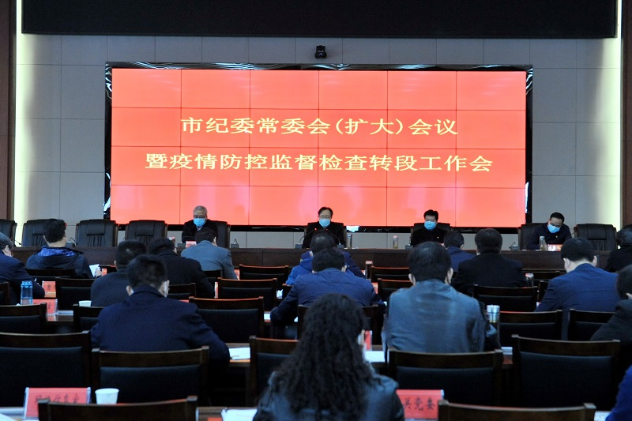

李建民：统筹做好疫情防控和经济社会发展工作 推动纪检监察工作顺利开展
来源： 岚皋县纪检监察网站

2月24日上午，市纪委常委会（扩大）会议暨疫情防控监督检查转段工作会在市纪检监察综合楼召开。市委常委、市纪委书记、市监委主任李建民参加会议并讲话。
李建民指出，此次会议的主要任务是深入学习贯彻习近平总书记重要讲话和批示指示精神，贯彻落实党中央重大决策部署和中央纪委、省委省纪委和市委工作要求，回顾总结前一阶段疫情防控监督检查工作，对下一阶段工作进行安排部署。
李建民对市纪委监委投身到疫情防控监督第一线作出的努力表示肯定。针对下步工作，他强调，要准确把握疫情防控形势任务，坚决扛稳疫情防控监督的重大政治责任；要准确把握疫情防控监督方式方法，由应急状态下的监督回归到日常监督上来，按照市委分区分类、精准施策的要求，及时调整监督重点；要统筹做好疫情防控和经济社会发展工作的政治要求，推动纪检监察各项工作顺利开展，坚持“两手抓”。
李建民还针对市纪委监委机关内部疫情防控工作提出要求，强调要带头履行自身防控主体责任，加强对机关人员管控，切实筑牢纪检监察机关和纪检监察干部安全防线。
会议传达了2月21日中央政治局会议精神、2月23日中央统筹推进新冠肺炎疫情防控和经济社会发展工作部署会议主要精神。（岚皋县日报社记者 毛玺玺）